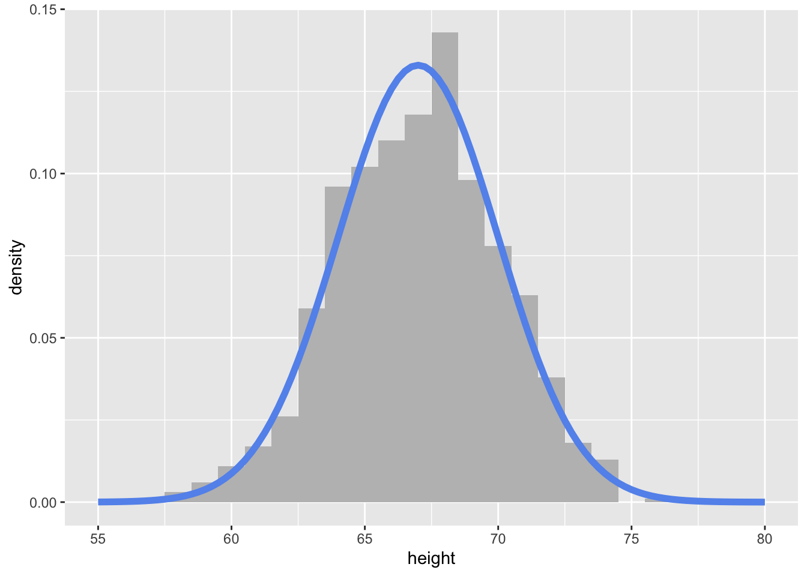

set.seed(1234)
rnorm(1, mean = 0, sd = 1)[1] -1.207066This week we will learn about simulating data and running simulations in R. By the end of the week you should:
r, p, d, and q functions do when simulating data from different statistical distributionsmap or pmap function.Simulation is a very important tool for statistical computing! “Simulation” is a very broad term that encompasses a lot of different things. For our purposes, we will focus on:
Whenever you are working with an operation in R that involves randomness (like generating random samples from a probability distribution!), you should choose your own seed using the set.seed() function. This guarantees your results will be consistent across runs (and hopefully computers):
set.seed(1234)
rnorm(1, mean = 0, sd = 1)[1] -1.207066set.seed(1234)
rnorm(1, mean = 0, sd = 1)[1] -1.207066Of course, it doesn’t mean the results will be the same in every subsequent run if you forget or reset the seed in between each line of code!
set.seed(1234)
rnorm(1, mean = 0, sd = 1)[1] -1.207066## Calling rnorm() again without a seed "resets" the seed!
rnorm(1, mean = 0, sd = 1)[1] 0.2774292It is very important to always set a seed at the beginning of a Quarto document that contains any random steps, so that your rendered results are consistent.
Note that you can choose your favorite number to be your seed - any number will do!
Note, though, that this only guarantees your rendered results will be the same if the code has not changed.
Changing any part of the code will re-randomize everything that comes after it!
When writing up a report which includes results from a random generation process, in order to ensure reproducibility in your document, use `{r}` or `r` to include your output within your written description with inline code.
my_rand <- rnorm(1, mean = 0, sd = 1)
my_rand[1] 1.084441Using `r my_rand` will display the result within my text:
My random number is 1.0844412.
Alternatively, you could have put the rnorm code directly into the inline text `r rnorm(1, mean = 0, sd = 1)`, but this can get messy if you have a result that requires a larger chunk of code.
If you took an intro statistics class at Cal Poly, you likely generated null distributions using both simulation and with a theoretical distribution. It is often helpful to be able to plot both a simulated (or empirical) distribution and a theoretical distribution together to see how well they match.
Let’s walk through the example in the lecture slides.
First, I will create simulated data with 1,000 observations, drawn from a normal distribution with mean 67 and standard deviation 3 (\(N(67, 3)\)).
set.seed(395)
my_samples <- set.seed(93401)
my_samples <- tibble(height = rnorm(n = 1000,
mean = 67,
sd = 3)
)
my_samples |>
head()# A tibble: 6 × 1
height
<dbl>
1 63.1
2 66.7
3 68.2
4 63.4
5 68.9
6 71.4To visualize the simulated heights, we can look at the density of the values.
To plot simulated (emprical) data we:
geom_histogram()y = after_after(density) is very important to make the plot on the same scale as the theoretical density curve!To plot the theoretical curve we:
state_function() geometrydnorm() with the specified mean and sd.my_samples %>%
ggplot(aes(x = height)) +
geom_histogram(aes(y = after_stat(density)),
binwidth = 1, fill = "grey") +
stat_function(fun = ~ dnorm(.x, mean = 67, sd = 3),
col = "cornflowerblue", lwd = 2) +
xlim(c(55, 80))
Taking random samples of either vectors or data frames is relatively simple in R using the functions sample() and slice_sample()
A couple of things that I want to emphasize or add from the reading:
sample(x = 1:10, size = 10) [1] 7 1 2 10 6 9 3 8 4 5slice_sample() from dplyr. You can provide a number or samples or poportion of the rows to sample:penguins |>
slice_sample(n = 5)# A tibble: 5 × 8
species island bill_length_mm bill_depth_mm flipper_length_mm body_mass_g
<fct> <fct> <dbl> <dbl> <int> <int>
1 Adelie Torgersen 41.1 18.6 189 3325
2 Gentoo Biscoe 45.1 14.5 215 5000
3 Chinstrap Dream 45.5 17 196 3500
4 Gentoo Biscoe 50 16.3 230 5700
5 Chinstrap Dream 46.6 17.8 193 3800
# ℹ 2 more variables: sex <fct>, year <int>penguins |>
slice_sample(prop = .01)# A tibble: 3 × 8
species island bill_length_mm bill_depth_mm flipper_length_mm body_mass_g
<fct> <fct> <dbl> <dbl> <int> <int>
1 Gentoo Biscoe 50.1 15 225 5000
2 Adelie Biscoe 45.6 20.3 191 4600
3 Gentoo Biscoe 44 13.6 208 4350
# ℹ 2 more variables: sex <fct>, year <int>Often, we want to repeat a simulation (random process) many times to see how it behaves! This involves iteration. Thus, to implement iterative simulations, we will want to write a function that implements one iteration of the simulation, and then use a map function to efficiently repeat that function many times and save the results.
Let’s take a classic problem – the Monty Hall Problem. A question was posed by Craig F. Whittaker in Marilyn vos Savant’s “Ask Marilyn” column in Parade Magazine in 1990.1
Suppose you’re on a game show, and you’re given the choice of three doors: Behind one door is a car; behind the others, goats. You pick a door, say No. 1, and the host, who knows what’s behind the doors, opens another door, say No. 3, which has a goat. He then says to you, “Do you want to pick door No. 2?” Is it to your advantage to switch your choice?
monty_hall <- function(x){
# randomly permute the three possibilities between 3 "doors"
doors <- sample(c("car", "goat", "goat"),
3)
# randomly select one door as a first choice
first_choice <- sample(1:3, 1)
# find which of the remaining doors have goats behind them
remaining_goat_doors <- setdiff(which(doors == "goat"), first_choice)
# reveal one of the goat doors
# (if there are still 2 doors with goats, choose randomly)
revealed_door <- ifelse(length(remaining_goat_doors) > 1,
sample(remaining_goat_doors, 1),
remaining_goat_doors)
# have the player switch their choice (aka, choose the remaining door option)
final_prize <- doors[setdiff(1:3, c(first_choice, revealed_door))]
# return if they won the car or got a goat!
final_prize
}monty_hall()[1] "goat"Now that we have implemented one iteration of the simulation, let’s repeat it many times! The mathematical solution to the problem is that the probability of getting a car if you switch is 2/3. Let’s see if our simulation shows that too.
Since the output of my function is a character, I am going to use map_chr(). All I want to do is repeatedly run the function many times, so I will input a vector of 1:n where n is how many times I want to run the simulation as the first argument .x to map_chr():
sim_result <- map_chr(.x = 1:1000,
.f = monty_hall)If you don’t have any additional arguments to pass to the function you provide to map you do not need to write the function as a lambda function. You only need to provide the function name. But careful! This would not work if I wrote .f = monty_hall().
Now let’s see the proportion of times that we won a car:
mean(sim_result == "car")[1] 0.672Pretty close to the theoretical value!